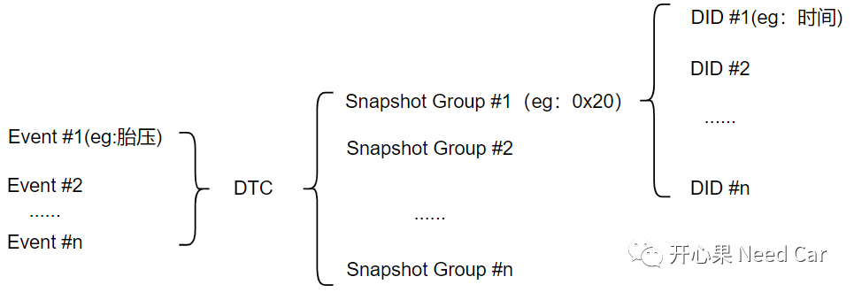
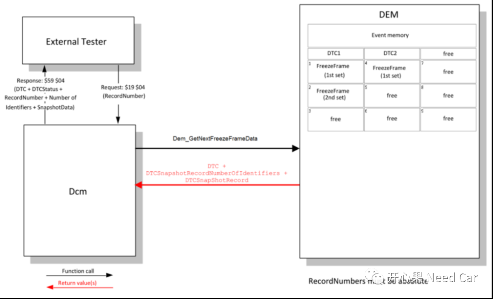
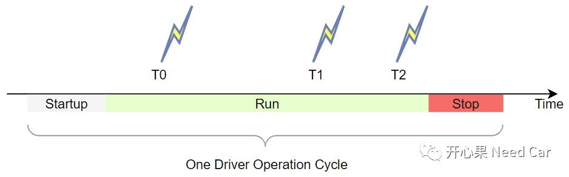
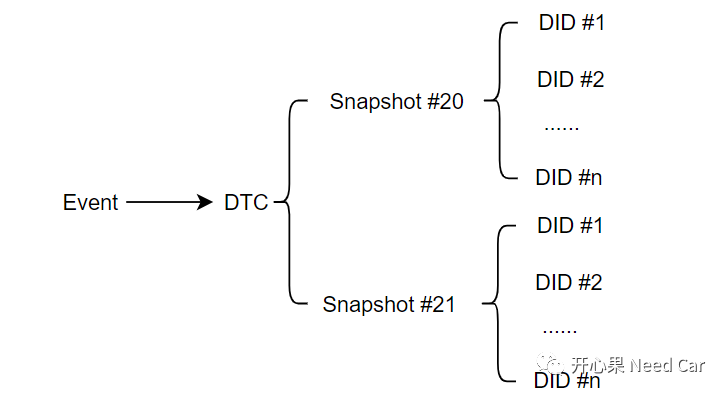
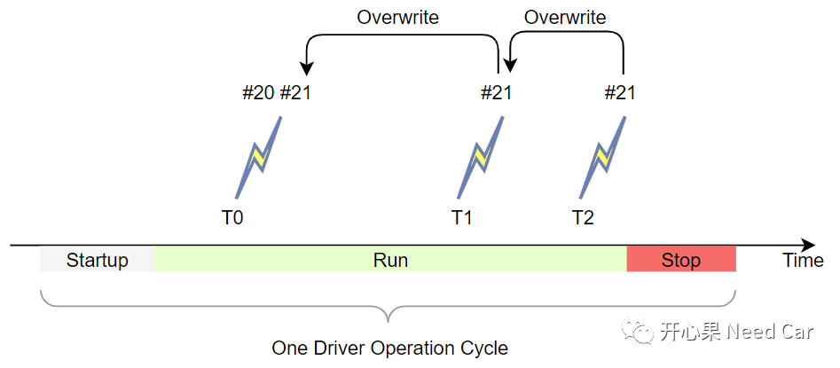
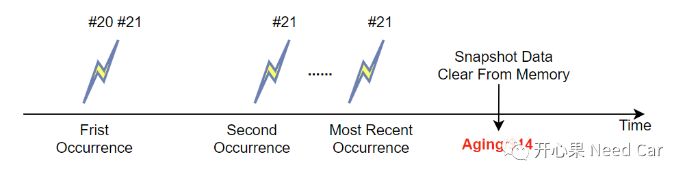

开心果 Need Car · 2023-07-21T09:22:00+08:00 · 微信原文
《UDS基础：快照数据（Snapshot）格式详解》一文中有提到快照数据（Snapshot Data），前文主要侧重$19 04格式的解读。对于Snapshot，还有很多值得展开细说的点。本文进一步讨论全局快照（Global Snapshot）和私有快照（Local Snapshot）的联系和区别。
提示：UDS中快照数据用Snapshot Data表示，而Autosar规范中，快照数据用冻结帧(freeze frames)表示，两者本质一样。
1、为什么要区分全局快照和私有快照
展开讨论之前，先回顾一下Event、DTC、Snapshot、DID之间的关系，如下所示：



举例：某个事件（Event）关联一个DTC，此DTC关联两组快照数据（#20、#21）如下所示：


工程上，如上的#20快照组习惯称为全局快照（Global DTC snapshot data），#21快照组习惯称为私有快照组（Local DTC snapshot data）。
一般来说，全局快照适用整车网络中的所有Public ECU，而私有快照适用Specific ECU。
2、全局快照和私有快照的区别与联系
（一）区别
一般来说，整车网络拓扑中，对于全局快照信息，每个节点均需要存储，而私有快照信息因节点不同，而略有区别。
3、Snapshot数据清除
清除内存中的快照数据（Snapshot Data）有两种方式：老化（Aging）或者$14服务（Clear Diagnostic Information Service）。示意如下：

提示：工程上，Aging/$14执行时，会清除与DTC关联的所有数据（Snapshot Data、Extended Data）。注意，清除的不仅仅是NVM中存储的信息，对应RAM区的信息也会清除。
往期精彩回顾